The performance conversation is starting to change.
We're regularly comparing the web's performance to the performance of native and it's no longer just important to consider how quickly a site loads but also how well it runs. Whether it’s on desktop or mobile, we want our web experience to be snappy, smooth and delightful. What this means is that even if the browser is busy rendering the page (i.e drawing it) or loading in content, the user should still be able to scroll around and interact with it without any slow-down. No one likes seeing visual glitchyness.
Do you remember the last time you went out for a meal? I always feel like the greeting I get from waiters is "Welcome to our nearly empty restaraunt, sir! Please follow me to our worst table". It's a lot like the types of web experiences we're going to try improving today. We've all been to pages where you try to scroll down, but no matter how hard you try, something just blocks you from getting where you want to. We can do better than that.
Many large sites, including Facebook and Flickr are starting to care about paint performance and frame rate more. They've found it can affect not only your user experience but also your user engagement. Measurement is the most important part of any performance profiling and this article focuses on how to do this within Chrome. Where possible, always check your sites and apps using the tooling in other browsers to double-check if your slowdown is browser-specific.
Let's look at the three bits of performance we're interested in when we talk about mobile performance optimization: Network, Compute and Render.
Network
60% of web traffic is images. That's a huge amount of data. Your users have to pay to download it if they're on a metered data plan each month (most users in the UK, as one example, are capped somewhere around the 1GB mark on mobile) and chances are your hosting is metered as well: you pay for users downloading files. As such you may want to look at the format in which you're serving your images. WebP currently offers huge file size savings when compared to the equivalent quality (that quality bit's important; you can always beat a codec by lowering your quality in another!) JPEG or PNG. If you run your own servers. you could do much worse than looking at mod_pagespeed, since that magically optimizes your site on the fly, minimizing and re-encoding assets.
Secondly you might want to take a look at the number of requests your site makes. Unless your user is on SPDY or HTTP 2.0 then every file will need to be requested separately, and every request will potentially have a large latency on it. It's worth remembering that bandwidth isn't latency, so even if you're on a 3G connection (or better), that doesn't necessarily correlate to lower latency! Finally, bear in mind that a request will keep the radio active on a mobile device. The radio is the second most draining item after the screen, so really we want to get it shut off as soon as we can. Otherwise your users will complain that your site destroys battery life, and that's not a good complaint to have leveraged at you.
Compute
All our JavaScript runs inside an engine. In Chrome's case the engine is V8, and like other engines in top-tier browsers, it's incredibly fast. It's fast because it watches your code and swaps it out at the function level with an optimized equivalent code.
The first thing you want to avoid is your code being deoptimized, which is where the old, slower code has to be resubstituted back in for the faster version. There are many reasons why this can happen, and they change (reminder: nothing stays the same) so the best thing you can do is to run a tool called d8, which is a standalone version of V8 which will tell you if your JavaScript got deoptimized. For more info check out Optimizing for V8 - Inlining, deoptimizations.
Secondly, since you don't retain and release memory yourself in JavaScript, you're at the mercy of the garbage collector. Why? Because memory usage from all your declared objects would grow and grow. You never manually release their memory, so the garbage collector has to come and clean them up when they're not needed anymore. Unfortunately garbage collection (GC) is not free and blocks JavaScript execution while it tidies up. Chrome DevTools handily points out to you when GC has occurred, so you should take time to see if you're generating a lot of garbage and see if your code is being paused for its collection.
Render
Your DOM becoming pixels on the screen can be one of the most costly parts of your app's lifecycle. Crucially when additional painting needs to occur as part of interaction with your app can resulting the app slowing. UI interactions, scrolling, content injections all cause the page to visibly change, and those changes need to be painted to the screen. Painting also encapsulates the decoding (you send a PNG, we need a bitmap in memory) and resizing (you send it at 1000px wide for a 300px wide element) of your app's images. Interestingly there's a cache available for these decoded images, but if you have a lot of images being decoded soon enough some images will need to be dropped from the cache.A quick study of the DevTools timeline will show you what's going on, so again it's worth checking those out.
The human eye perceives a continuous stream of information. It does not naturally see motion as a series of frames. In the worlds of animation, film and gaming, using a series of still frames to simulate motion create some interesting perceptual artifacts - especially if the frames are played back too slowly. This is because when you have a varying frame rate that isn't constant, our eyes perceive jerkiness and jitter, not smoothness in the motion, and what we see can appear to flicker.
For an optimal user experience, animations need to be silky, scrolling must be buttery-smooth and your page needs to contain little to no jank - a term that means a disruption in consistent frame rate that manifests itself visually.
On the web, a low frame rate (and janky experience) means that individual frames being rendered by the browser can be made out by the human eye. Giving users a jank-free experience often comes down to offering an experience that can run at 60fps on sites and web apps, not just games and animations. At 60fps, you have 16.66ms to complete absolutely everything in for Chrome to display a frame of your page - that's logic processing, painting, layout, image decoding, compositing..everything. Once you factor in mischellaneous browser processes, this number looks more like 8-10ms and blowing this budget can mean your users are more likely to see jank in their pages.
What's magical about the number 60? Well, we say 60fps as this matches the refresh rate of those of the devices we use today. Animations should match the refresh of the device they are being used on. Phones are usually 55-60hz. Laptops 58-60hz (although 50hz in low power mode) and most monitors are 50-62hz.
To hit 60fps, we sometimes need to go beyond JavaScript as the sole performance bottleneck for our pages and spend more time investigating paint and layout issues - styles might actually be the core cause of our sluggish performance.
Some of the core causes of jank in sites and applications include:
Many web developers use setInterval or setTimeout every 16 milliseconds to create animations. This is a problem for a variety of reasons (and we'll discuss more in a minute), but of particular concern are:
Recall the frame timing problem mentioned above: you need a completed animation frame, finished with any JavaScript, DOM manipulation, layout, painting, etc, to be ready before the next screen refresh occurs. Low timer resolution can make it difficult to get animation frames completed before the next screen refresh, but variation in screen refresh rates makes it impossible with a fixed timer. No matter what the timer interval is you'll slowly drift out of the timing window for a frame and end up dropping one. This would happen even if the timer fired with millisecond accuracy, which it won't (as developers have discovered) -- timer resolution varies depending on whether the machine is on battery vs. plugged in, can be affected by background tabs hogging resources, etc. Even if this is rare (say, every 16 frames because you were off by a millisecond) you'll notice: you'll be dropping several frames a second. You'll also be doing the work to generate frames that never get displayed, which wastes power and CPU time you could be spending doing other things in your application.
Different displays have different refresh rates: 60Hz is common, but some phones are 59Hz, some laptops drop to 50Hz in low-power mode, some desktop monitors are 70Hz.
We tend to focus on frames per second (FPS) when discussing rendering performance, but variance can be an even bigger problem. Our eyes notice the tiny, irregular hitches in animation that a poorly timed animation can produce.
The way to get correctly timed animation frames is with requestAnimationFrame. When you use this API, you're asking the browser for an animation frame. Your callback gets called when the browser is soon going to produce a new frame. This happens no matter what the refresh rate is.
requestAnimationFrame has other nice properties too:
requestAnimationFrame has been discussed all over the place already, so refer to articles like this one from creative JS for more info on it, but it's an important first step to smooth animation.
What's better than lightweight JS in your event and rAF callbacks? No JS.
Earlier we said there's no silver bullet for avoiding interrupting your rAF callbacks, but you can use CSS animation to avoid the need for them entirely. On Chrome for Android in particular (and other browsers are working on similar features), CSS animations have the very desirable property that the browser can often run them even if JavaScript is running.
There's an implicit statement in the above section on jank: browsers can only do one thing at a time. This isn't strictly true, but it's a good working assumption to have: at any given time the browser can be running JS, performing layout, or painting, but only one at a time. This can be verified in the Timeline view of Dev Tools. One of the exceptions to this rule is CSS animations on Chrome for Android (and soon desktop Chrome, though not yet).
When possible, using a CSS animation both simplifies your application and lets animations run smoothly, even while JavaScript runs.
Let’s quickly recall what a paint is. In the life of a web page we generally perform three core tasks: fetching resources, parsing and tokenizing these resources (HTML/CSS/JS) and finally drawings things to screen.
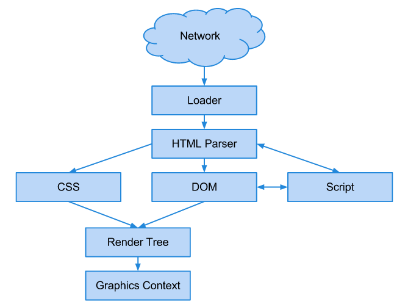In a browser's paint phase, we have a tree of visual elements in the order in which they will be displayed called the render tree. This is traversed and a "paint" method called to display content to the screen. Painting can either be global (against the whole tree) or incremental (partial). The basic flow of a rendering engine can be seen below, taken from Tali Garsiel’s “How Browsers Work”.
Who should you care about this? Well, it's important to be aware that the browser has to do a lot of work in order to draw things to the screen. Anything you do to increase the complexity of that task (e.g forcing the entire layout of the page to be recalculated) has the potential to introduce jank to your pages. You ideally want to avoid this. So, let's talk about some tooling that can help you measure these slowdowns.
The Timeline panel provides an overview of where time is spent loading up your web application such as how long it takes to process DOM events, render page layouts or paint elements to the screen. It allows you to drill down into three separate facets that can help discover why your application is slow: Events, Frames and actual Memory usage.
For this article, we're interested in Frames mode, which gives you insight into the tasks Chrome had to perform to generate a single frame (update) of your application for presentation on the screen.
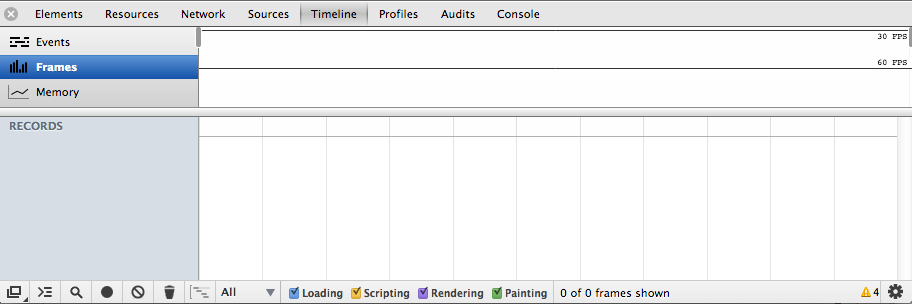Timeline won't display any data by default but you can begin a recording session with it by opening your app and clicking on the gray circle at the bottom of the pane - using the Cmd/Ctrl+E shortcut will also trigger a record. This record button will turn from gray to red and the Timeline will begin to capture the timelines for your page. If you don't have a site or app to hand, try out http://inception-explained.com as this is a site with jank.
Complete a few actions inside your app (or the one suggested, such as scrolling) and after a few seconds, click the button again to stop recording.

The Summary view (at the top of the Timeline) displays horizontal bars representing the network and HTML parsing (blue), JavaScript (yellow), style recalculation and layout (purple) and painting and compositing (green) events for your page. Repaints are browser events invoked by responses to visual changes such as window resizes or scrolls.Recalculations occur due to modifications of CSS properties whilst Layout events (or reflows) are due to changes in element position.

Hovering over a record will display an extended tooltip with details about the time taken to complete it - these have so much useful information in there, so do pay attention to them, especially the Call Stack
The Timeline also identifies when your application causes a forced asynchronous layout and marks these records with yellow warning icon.
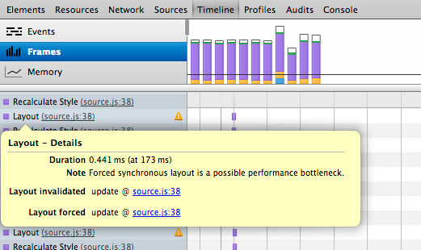During a user’s interaction with a page, only parts of it will be changed. For example, they may perform an action changing visibility or adding an outline to an element. The actual process of updating the screen is known as a repaint. Changes to your page (e.g JavaScript has modified CSS styles) invalidate the rectangle you see on the screen and cause your browser to view it as "damaged" (this is known as a damage rect).
A repaint is an expensive operation performance wise and can make your page look sluggish, which you ideally want to avoid. In Chrome, we keep an eye on what in the screen needs to be changed, creating a damage rectangle with the coordinates to parts of the page requiring repainting.
We save the old rectangle, prior to your changes, as a bitmap and then only paint the delta between the new rectangle and the old one. If you notice that there are particular areas of a page that require a lot of repainting, it’s useful to investigate what can be done to reduce the painting cost.
Before we explore an updated workflow for reducing repaints and jank, let’s first look at a new shortcut that was introduced to help with this.
We recently added helper to the DevTools (Canary) allowing you to easily toggle setting visibility:hidden on an element. When this style is applied to an element, it isn’t painted but does maintain the page layout in an unchanged state.
To use the shortcut, select a DOM element in the Elements panel and then press the H key. When paired with paint rectangles and the Timeline, you can easily evaluate which DOM elements are spending long on paint time.
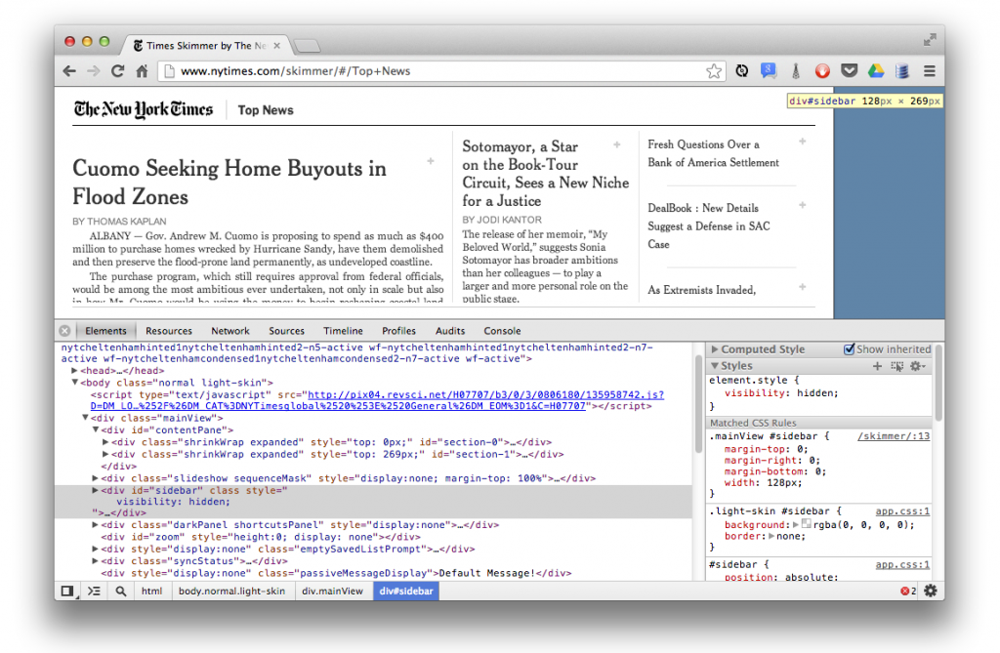
Some of the reasons Chrome repaints areas of the page include user-interactions which cause style changes to DOM elements, DOM nodes being changes (forcing layout recalculation) and any other operatons which cause the layout of the page to be changed.
It can be useful to understand why repaints occur in your page. "Continuous page repainting" is a tool we recently introduced to the Settings panel which helps identify elements that have a high paint cost on the page. It forces the page into constantly repainting, providing a counter that shows just how much paint work is being done. You can use the H shortcut mentioned above to toggle different styles (keep an eye on the counter!) to diagnose what is causing the slowdown.

Workflow
Let’s now look at what an expanded workflow for diagnosing paint and jank issues might look like:
Especially on sites that rely heavily on scroll, you might discover that your main content is relying on overflow:scroll. This is a real challenge as this scrolling isn’t GPU accelerated in any way so the content is repainted whenever your user scrolls. You can work around such issues using normal page scroll (overflow:visible) and position:fixed.
The next thing we're going to look at is GPU acceleration. In the past, Web browsers have relied pretty heavily on the CPU to render pages. This involved two things: firstly, painting elements into a bunch of textures, called layers; and secondly, compositing all of those layers together to the final picture seen on screen. Over the past few years, however, we've found that getting the GPU involved in the compositing process can lead to some significant speeding up. The premise is that, while the textures are still painted on the CPU, they can be uploaded to the GPU for compositing. Assuming that all we do on future frames is move elements around (using CSS transitions or animations) or change their opacity, we simply provide these changes to the GPU and it takes care of the rest. We essentially avoid having to give the GPU any new graphics; rather, we just ask it to move existing ones around. This is something that the GPU is exceptionally quick at doing, thus improving performance overall.
There is no guarantee that this hardware compositing will be available and enabled on a given platform, but if it is available the first time you use, say, a 3D transform on an element, then it will be enabled in Chrome. Many developers use the translateZ hack to do just that. The other side effect of using this hack is that the element in question will get its own layer, which may or may not be what you want. It can be very useful to effectively isolate an element so that it doesn't affect others as and when it gets repainted. It's worth remembering that the uploading of these textures from system memory to the video memory is not necessarily very quick. The more layers you have, the more textures need to be uploaded and the more layers that will need to be managed, so it's best not to overdo it.
Another great setting in Developer Tools that can help here is “Show composited layer borders.” This feature will give you insight into those DOM elements that are being manipulated at the GPU level.
If an element is taking advantage of the GPU acceleration, you'll see an orange border around it with this on. Now as we scroll through, we don't really see any use of composited layers on this page — not when we click “Scroll to top” or otherwise. Chrome is getting better at automatically handling layer promotion in the background; but, as mentioned, developers sometimes use the translateZ hack to create a composited layer. Below is one site's homepage with translateZ(0) applied to all pins. It's not hitting 60 FPS, but it is getting closer to a consistent 30 FPS on desktop, which is actually not bad.
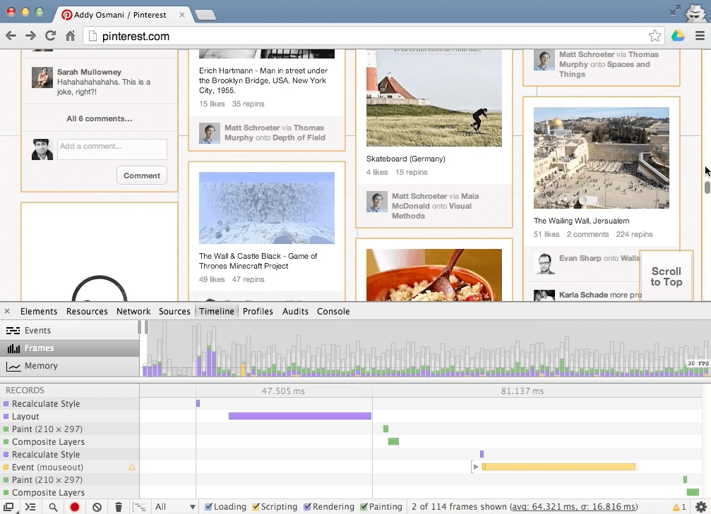
Remember to test on both desktop and mobile, though; their performance characteristics vary wildly. Use the timeline in both, and watch your paint time chart in Continuous Paint mode to evaluate how fast you're busting your budget. Again, don't use this hack on every element on the page - it might pass muster on desktop, but it won't on mobile. The reason is that there is increased video memory usage and an increased layer management cost, both of which could have a negative impact on performance. Instead, use hardware compositing only to isolate elements where the paint cost is measurably high.
Under ‘Rendering’ in the Settings cog, you can enable a feature called ‘Show paint rectangles’ to help you visually see the area repainted in each frame. With this feature enabled, it can become easy to visualize what slows pages down. You want to keep the areas being repainted as small as possible.

An older, but equally as useful tool for visualizing frame rate and jank is the real-time FPS counter. This can be enabled in the DevTools by going to the Settings menu and checking Show FPS meter.
When activated, you will see a dark box in the top-right corner of your page with frame statistics. The counter can be used during live editing to diagnose what in your page is causing a drop-off in frame rate without having to switch back and forth with the Timeline view.
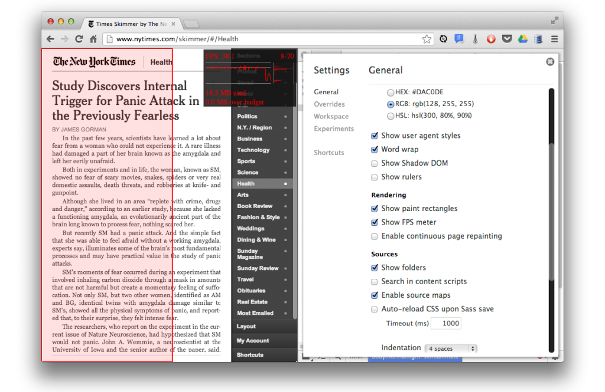
Keep in mind that just tracking the FPS counter may lead to you not noticing frames with intermittent jank. Be careful when using the content. It is also worth noting that FPS on desktop does not equal FPS on devices and special care should be taken to profile the performance there too.
Let's look at an animation sample with janky animation and see if we can improve it to better visualize what it means to be jank-free.
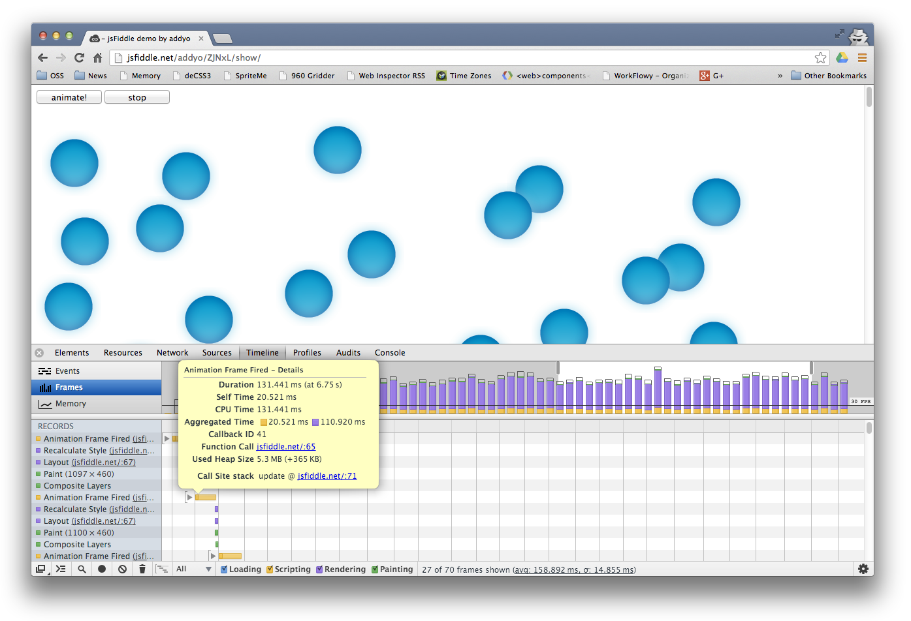1. Open up http://jsfiddle.net/AxEJY/.
2. Click 'animate!'. As you can see there is a visual break in motion, resulting in a suboptimal animation. We can record a Timeline session during the animation of this page to confirm that we have an issue hitting an optimal frame rate.
3. Let's see what's causing things to slow down. Here's the JavaScript for our animation as well as the CSS.
JavaScript:
// setup
var rAF = window.requestAnimationFrame;
var startBtn = document.querySelector('.animate');
var stopBtn = document.querySelector('.stop');
// state
window.running = false;
// add listeners
// start
startBtn.addEventListener("click", function(e){
running = true;
rAF(update);
});
// stop
stopBtn.addEventListener("click", function(e){
running = false;
});
// Set the heights for all these
// movers in simple CSS style.top
var movers = document.querySelectorAll('.mover');
(function init() {
for (var m = 0; m < movers.length; m++) {
movers[m].style.top = (m * 20 + 50) + 'px';
}
})();
// animation loop
function update(timestamp) {
for (var m = 0; m < movers.length; m++) {
movers[m].style.left = ((Math.sin(movers[m].offsetTop + timestamp / 1000) + 1) * 500) + 'px';
}
if (window.running){
rAF(update);
}
};
rAF(update);
CSS:
.mover {
background:url(http://jankfree.org/velocity-europe/examples/too-much-layout/particle.png);
height:100px;
width:100px;
position:absolute;
z-index:0;
}
input {
z-index:2;
font-size:25pt;
height:100px;
width:100px;
display:inline-block;
}
Looking at the recording of the first few frames it's clear that each one is taking over 300ms to complete. If you hover your mouse over one of the frames a pop-up appears showing additional details about the frame.

Locate an Animation Frame Fired record and notice the yellow warning icon next to it, indicating a forced synchronous layout. The icon is slightly dimmed indicating that one of its child records contains the offending code, rather than this record itself. Expand the Animation Frame Fired to view its children.

The child records show a long, repeating pattern of Recalculate Style and Layout records. Each layout record is a result of the style recalculation that, in turn, is a result of the requestAnimationFrame() handler requesting the value of offsetTop for each image on the page. Hover your mouse over one of the Layout records and click the link for sources.js next to the Layout Forced property.

update() function, which is the requestAnimationCallback() callback handler. The handler computes the image's left CSS style proeprty on the the image's offsetTop value. This forces Chrome to perform a new layout immediately to make sure it provides the correct value.
// Animation loop
function update(timestamp) {
for(var m = 0; m < movers.length; m++) {
movers[m].style.left = ((Math.sin(movers[m].offsetTop + timestamp/1000)+1) * 500) + 'px';
}
raf = window.requestAnimationFrame(update);
};
We know that forcing a page layout during every animation frame is slowing things down. Now we can try to fix the problem directly in DevTools.
Now that we have an idea what's causing the performance issues, we can modify the JavaScript file directly in the Sources panel and test our changes right away.
movers[m].style.left = ((Math.sin(m + timestamp/1000)+1) * 500) + 'px';
This version computes each image's left style property on its index in its holding array instead of on a layout-dependent property (offsetWidth).
The animation is clearly faster and smoother than before, but it's always good practice to measure the difference with another recording. It should look something like the recording below.

Try it out. The corrected code for this sample can be found at http://jsfiddle.net/k4yM3/ and now performs at close to 60fps.
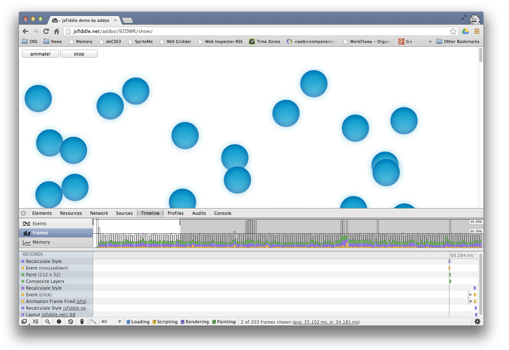
Re-do your Timeline recording and you will now see that performance has greatly improved.
Your JavaScript can annotate DevTools Timeline recordings using console.timeStamp(). See below for 'Adding result', an annotation added by our code during profiling:
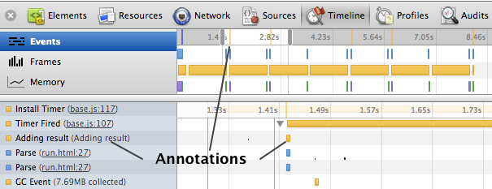Your code can also use console.time() & console.timeEnd() to mark ranges in DevTools Timeline recordings:
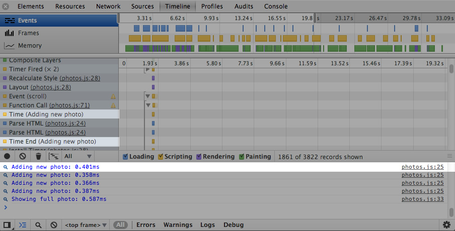If you enable "Show CPU activity on the ruler", you can overlay the CPU activity in your Timeline recordings. With this on, the light bars indicate the CPU was busy. If you hover over a CPU bar, this highlights the region during which the CPU was active.

If you would like to drill down to records of a particular type, you can do this by using the Ctrl + F shortcut (Cmd + F on Mac) when in the Timeline. Just enter in the name of the record type (e.g 'scroll') and Timeline will only show the records containing the term.

In case you're wondering what those transparent bars in the Timeline mean, these hollow frames correspond to one of two things: your JavaScript on the main thread was busy doing something we forgot to show (instrument) in the DevTools or you were bottlenecked by your GPU.
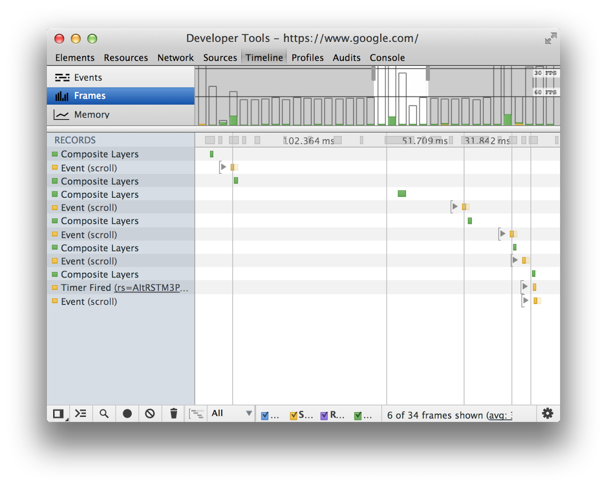The experience of your web content on mobile operates very differently than what users experience on the desktop, but luckily much of the performance tooling we've discussed is available via remote debugging too. The Google Chrome DevTools allow you to inspect, debug, and analyze the on-device experience with the full suite of tools you're used to, meaning you can use the Chrome DevTools on your development machine to debug a page on your mobile device.

Debugging occurs over USB and as long as your mobile device is connected to your development machine, you can view and change HTML, scripts and styles until you get a bug-free page that behaves perfectly on all devices.
A streamlined version of the debugging process is available in preview versions of Chrome (including the the Chrome Beta and Dev update channels and Chrome Canary). Stable versions of Chrome require a few extra steps. Follow the steps for your version of Chrome:
When debugging a web application served from your development machine, you can use reverse port forwarding to allow the mobile device to access a site from the development machine over USB.
To start debugging, you need:
ADBPlugin is a Chrome extension that simplifies the process of setting up remote debugging. ADBPlugin includes the Android Debug Bridge (ADB), which lets you debug the device over USB from your development machine. It provides the following features:
In order to debug over USB, you need to setup your Android device for development. Enable USB debugging on your device then system to detect your device as mentioned in the guide.
To enable USB debugging:

If you are developing on Windows, you need to install the appropriate USB driver for your device. See OEM USB Drivers on the Android Developers site.
For more information see Setting up a Device for Development on the Android Developers site.

When ADBPlugin is installed, a gray Android menu icon appears beside the Chrome menu.
To start debugging:
Click the Android icon, then click Start ADB.

Once ADB has started, the menu icon turns green and displays the number of currently connected devices, if any.

If you don't see any connected devices:
adb devices
command. If not, check that you have USB debugging enabled on your
device.
For example, inspect an element in the page you have selected and the element highlights in Chrome mobile on your device in real time.
Similarly, editing scripts or executing commands from the DevTools console affects the page being inspected on your device. You can also also use all of the other panels, such as Timeline and Profiles.
Jank are some of the trickiest bugs to nail down but they can be the most trying and have a direct effect on user happiness. Pursue jank issues relentlessly and develop a keen eye for identifying it. There's no fixed way to identify and fix these problems otherwise. No hard and fast rules.
Although at the time of writing, Chrome has the best tools to profile paint performance, we strongly recommend testing and measuring your pages in other browsers to get a feel for what your own users might experience (where feasible). Performance can vary massively between them, and a performance smell in one browser might not be present in another.
Measure for yourself, understand the abstractions, know your browser's internals. In time, we hope that the cross- browser tooling for this area improves so that developers can get an accurate picture of rendering performance, regardless of the browser being used.
Performance is important. Not all machines are created equal, and the fast machines that developers work on might not have the performance problems encountered on the devices of real users. Frame rate in particular can have a big impact on engagement and, consequently, on a project's success. Luckily, a lot of great tools out there can help with that.
Be sure to measure paint performance on both desktop and mobile. If all goes well, your users will end up with snappier, more silky-smooth experiences, regardless of the device they're using.To learn more about optimizing the paint performance of your pages, check out http://jankfree.org and our official Chrome DevTools documentation.
{kind=link}
{kind=link}